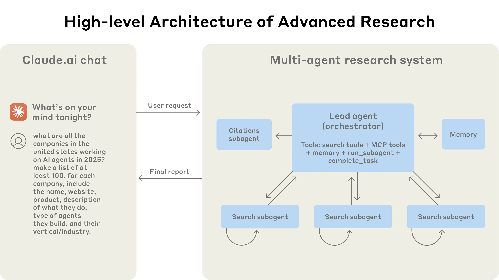
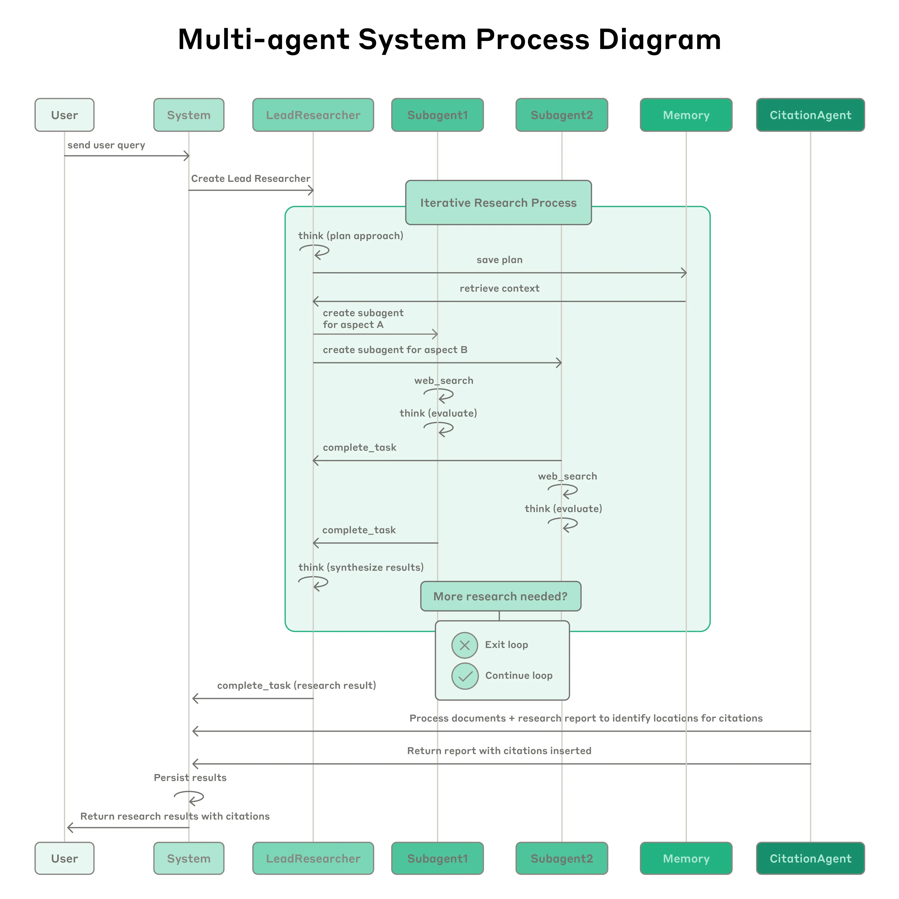

<!DOCTYPE html>
<html lang="ko" dir="ltr"><head><title>How we built our multi-agent research system</title><meta charset="utf-8"/><link rel="preload" href="../../../../index-c2304d2c.css" as="style"/><link rel="preload" href="../../../../prescript-2bfc6315.js" as="script"/><link rel="preconnect" href="https://cdnjs.cloudflare.com" crossorigin="anonymous"/><meta name="viewport" content="width=device-width, initial-scale=1.0"/><meta name="og:site_name" content="기술 노트"/><meta property="og:title" content="How we built our multi-agent research system"/><meta property="og:type" content="website"/><meta name="twitter:card" content="summary_large_image"/><meta name="twitter:title" content="How we built our multi-agent research system"/><meta name="twitter:description" content="학습과 실험을 정리한 노트입니다. 표시된 날짜는 원본 기록일입니다."/><meta property="og:description" content="학습과 실험을 정리한 노트입니다. 표시된 날짜는 원본 기록일입니다."/><meta property="og:image:alt" content="학습과 실험을 정리한 노트입니다. 표시된 날짜는 원본 기록일입니다."/><meta property="og:image" content="https://yeongseoksong.github.io/blog/static/og-image.png"/><meta property="og:image:url" content="https://yeongseoksong.github.io/blog/static/og-image.png"/><meta name="twitter:image" content="https://yeongseoksong.github.io/blog/static/og-image.png"/><meta property="og:image:type" content="image/.png"/><meta property="twitter:domain" content="yeongseoksong.github.io/blog"/><meta property="og:url" content="https://yeongseoksong.github.io/blog/대학원/논문-리뷰/ai/building-effective-agents/how-we-built-our-multi-agent-research-system"/><meta property="twitter:url" content="https://yeongseoksong.github.io/blog/대학원/논문-리뷰/ai/building-effective-agents/how-we-built-our-multi-agent-research-system"/><link rel="icon" href="../../../../static/icon.png"/><meta name="description" content="학습과 실험을 정리한 노트입니다. 표시된 날짜는 원본 기록일입니다."/><meta name="generator" content="Quartz"/><link href="../../../../index-c2304d2c.css" rel="stylesheet" type="text/css" data-persist="true"/><link href="../../../../component-735924e0.css" rel="stylesheet" type="text/css" data-persist="true"/><link href="../../../../component-589c1cea.css" rel="stylesheet" type="text/css" data-persist="true"/><link href="../../../../component-2911f5d1.css" rel="stylesheet" type="text/css" data-persist="true"/><link href="../../../../component-e1e93ade.css" rel="stylesheet" type="text/css" data-persist="true"/><link href="../../../../component-53b25b2b.css" rel="stylesheet" type="text/css" data-persist="true"/><link href="../../../../component-c93c6a44.css" rel="stylesheet" type="text/css" data-persist="true"/><link href="../../../../component-8a06014f.css" rel="stylesheet" type="text/css" data-persist="true"/><link href="../../../../component-77d6a441.css" rel="stylesheet" type="text/css" data-persist="true"/><link href="../../../../component-6ee21cee.css" rel="stylesheet" type="text/css" data-persist="true"/><link href="../../../../component-b43df3ac.css" rel="stylesheet" type="text/css" data-persist="true"/><link href="../../../../component-34bdfded.css" rel="stylesheet" type="text/css" data-persist="true"/><link href="../../../../component-9406c2cd.css" rel="stylesheet" type="text/css" data-persist="true"/><link href="../../../../component-642859cd.css" rel="stylesheet" type="text/css" data-persist="true"/><link href="../../../../component-4abc06bd.css" rel="stylesheet" type="text/css" data-persist="true"/><link href="../../../../component-274a3dfe.css" rel="stylesheet" type="text/css" data-persist="true"/><link href="../../../../component-94cb6c84.css" rel="stylesheet" type="text/css" data-persist="true"/><link href="../../../../static/resource-style-a5c806d2.css" rel="stylesheet" type="text/css" data-persist="true"/><link href="../../../../static/resource-style-0be4fa7f.css" rel="stylesheet" type="text/css" data-persist="true"/><link href="../../../../static/resource-style-d2eefd3a.css" rel="stylesheet" type="text/css" data-persist="true"/><link href="../../../../static/resource-style-a71023bb.css" rel="stylesheet" type="text/css" data-persist="true"/><link href="../../../../static/resource-style-89d3cd78.css" rel="stylesheet" type="text/css" data-persist="true"/><link href="https://cdn.jsdelivr.net/npm/katex@0.16.11/dist/katex.min.css" rel="stylesheet" type="text/css" data-persist="true"/><script src="../../../../prescript-2bfc6315.js" type="application/javascript" data-persist="true"></script><script type="application/javascript" data-persist="true">const fetchData = fetch("../../../../static/contentIndex.json").then(r => { if (!r.ok) throw new Error("HTTP " + r.status); return r.json() }).catch(e => { console.warn("[Quartz] Could not load ../../../../static/contentIndex.json (" + e.message + "); is configuration.contentIndex disabled?"); return {} });window.quartzStaticUrl = new URL("../../../../static/", location.href).href</script></head><body data-slug="대학원/논문-리뷰/ai/building-effective-agents/how-we-built-our-multi-agent-research-system" data-basepath="/blog"><div id="quartz-root" class="page" data-frame="default"><div id="quartz-body"><div class="left sidebar" data-sidebar-mode="fit"><h2 class="page-title" data-quartz-plugin="page-title" data-quartz-component="PageTitle"><a href="../../../..">기술 노트</a></h2><div class="mobile-only"><div class="spacer" data-quartz-plugin="spacer" data-quartz-component="Spacer"></div></div><div class="flex-component" style="flex-direction: row; flex-wrap: nowrap; gap: 0.5rem;"><div style="flex-grow: 1; flex-shrink: 1; flex-basis: auto; order: 0; align-self: center; justify-self: center;"><div class="search" data-quartz-plugin="search" data-quartz-component="Search"><button class="search-button" aria-label="검색" aria-expanded="false"><svg role="img" xmlns="http://www.w3.org/2000/svg" viewBox="0 0 19.9 19.7"><title>Search</title><g class="search-path" fill="none"><path stroke-linecap="square" d="M18.5 18.3l-5.4-5.4"></path><circle cx="8" cy="8" r="7"></circle></g></svg><p>검색</p></button><div class="search-container"><div class="search-space"><input autocomplete="off" class="search-bar" name="search" type="text" aria-label="검색어를 입력하세요" placeholder="검색어를 입력하세요"/><div class="search-layout" data-preview="true" data-field-priority="[&quot;title&quot;,&quot;content&quot;,&quot;tags&quot;]"></div></div></div></div></div><div style="flex-grow: 0; flex-shrink: 1; flex-basis: auto; order: 0; align-self: center; justify-self: center;"><button class="darkmode" aria-label="다크 모드" data-quartz-plugin="darkmode" data-quartz-component="Darkmode"><svg xmlns="http://www.w3.org/2000/svg" xmlns:xlink="http://www.w3.org/1999/xlink" version="1.1" class="dayIcon" x="0px" y="0px" viewBox="0 0 35 35" style="enable-background:new 0 0 35 35" xml:space="preserve" aria-label="다크 모드"><title>다크 모드</title><path d="M6,17.5C6,16.672,5.328,16,4.5,16h-3C0.672,16,0,16.672,0,17.5    S0.672,19,1.5,19h3C5.328,19,6,18.328,6,17.5z M7.5,26c-0.414,0-0.789,0.168-1.061,0.439l-2,2C4.168,28.711,4,29.086,4,29.5    C4,30.328,4.671,31,5.5,31c0.414,0,0.789-0.168,1.06-0.44l2-2C8.832,28.289,9,27.914,9,27.5C9,26.672,8.329,26,7.5,26z M17.5,6    C18.329,6,19,5.328,19,4.5v-3C19,0.672,18.329,0,17.5,0S16,0.672,16,1.5v3C16,5.328,16.671,6,17.5,6z M27.5,9    c0.414,0,0.789-0.168,1.06-0.439l2-2C30.832,6.289,31,5.914,31,5.5C31,4.672,30.329,4,29.5,4c-0.414,0-0.789,0.168-1.061,0.44    l-2,2C26.168,6.711,26,7.086,26,7.5C26,8.328,26.671,9,27.5,9z M6.439,8.561C6.711,8.832,7.086,9,7.5,9C8.328,9,9,8.328,9,7.5    c0-0.414-0.168-0.789-0.439-1.061l-2-2C6.289,4.168,5.914,4,5.5,4C4.672,4,4,4.672,4,5.5c0,0.414,0.168,0.789,0.439,1.06    L6.439,8.561z M33.5,16h-3c-0.828,0-1.5,0.672-1.5,1.5s0.672,1.5,1.5,1.5h3c0.828,0,1.5-0.672,1.5-1.5S34.328,16,33.5,16z     M28.561,26.439C28.289,26.168,27.914,26,27.5,26c-0.828,0-1.5,0.672-1.5,1.5c0,0.414,0.168,0.789,0.439,1.06l2,2    C28.711,30.832,29.086,31,29.5,31c0.828,0,1.5-0.672,1.5-1.5c0-0.414-0.168-0.789-0.439-1.061L28.561,26.439z M17.5,29    c-0.829,0-1.5,0.672-1.5,1.5v3c0,0.828,0.671,1.5,1.5,1.5s1.5-0.672,1.5-1.5v-3C19,29.672,18.329,29,17.5,29z M17.5,7    C11.71,7,7,11.71,7,17.5S11.71,28,17.5,28S28,23.29,28,17.5S23.29,7,17.5,7z M17.5,25c-4.136,0-7.5-3.364-7.5-7.5    c0-4.136,3.364-7.5,7.5-7.5c4.136,0,7.5,3.364,7.5,7.5C25,21.636,21.636,25,17.5,25z"></path></svg><svg xmlns="http://www.w3.org/2000/svg" xmlns:xlink="http://www.w3.org/1999/xlink" version="1.1" class="nightIcon" x="0px" y="0px" viewBox="0 0 100 100" style="enable-background:new 0 0 100 100" xml:space="preserve" aria-label="라이트 모드"><title>라이트 모드</title><path d="M96.76,66.458c-0.853-0.852-2.15-1.064-3.23-0.534c-6.063,2.991-12.858,4.571-19.655,4.571  C62.022,70.495,50.88,65.88,42.5,57.5C29.043,44.043,25.658,23.536,34.076,6.47c0.532-1.08,0.318-2.379-0.534-3.23  c-0.851-0.852-2.15-1.064-3.23-0.534c-4.918,2.427-9.375,5.619-13.246,9.491c-9.447,9.447-14.65,22.008-14.65,35.369  c0,13.36,5.203,25.921,14.65,35.368s22.008,14.65,35.368,14.65c13.361,0,25.921-5.203,35.369-14.65  c3.872-3.871,7.064-8.328,9.491-13.246C97.826,68.608,97.611,67.309,96.76,66.458z"></path></svg></button></div><div style="flex-grow: 0; flex-shrink: 1; flex-basis: auto; order: 0; align-self: center; justify-self: center;"><button class="readermode" aria-label="리더 모드" data-quartz-plugin="reader-mode" data-quartz-component="ReaderMode"><svg xmlns="http://www.w3.org/2000/svg" xmlns:xlink="http://www.w3.org/1999/xlink" version="1.1" class="readerIcon" fill="currentColor" stroke="currentColor" stroke-width="0.2" stroke-linecap="round" stroke-linejoin="round" width="64px" height="64px" viewBox="0 0 24 24" aria-label="리더 모드"><title>리더 모드</title><g transform="translate(-1.8, -1.8) scale(1.15, 1.2)"><path d="M8.9891247,2.5 C10.1384702,2.5 11.2209868,2.96705384 12.0049645,3.76669482 C12.7883914,2.96705384 13.8709081,2.5 15.0202536,2.5 L18.7549359,2.5 C19.1691495,2.5 19.5049359,2.83578644 19.5049359,3.25 L19.5046891,4.004 L21.2546891,4.00457396 C21.6343849,4.00457396 21.9481801,4.28672784 21.9978425,4.6528034 L22.0046891,4.75457396 L22.0046891,20.25 C22.0046891,20.6296958 21.7225353,20.943491 21.3564597,20.9931534 L21.2546891,21 L2.75468914,21 C2.37499337,21 2.06119817,20.7178461 2.01153575,20.3517706 L2.00468914,20.25 L2.00468914,4.75457396 C2.00468914,4.37487819 2.28684302,4.061083 2.65291858,4.01142057 L2.75468914,4.00457396 L4.50368914,4.004 L4.50444233,3.25 C4.50444233,2.87030423 4.78659621,2.55650904 5.15267177,2.50684662 L5.25444233,2.5 L8.9891247,2.5 Z M4.50368914,5.504 L3.50468914,5.504 L3.50468914,19.5 L10.9478955,19.4998273 C10.4513189,18.9207296 9.73864328,18.5588115 8.96709342,18.5065584 L8.77307039,18.5 L5.25444233,18.5 C4.87474657,18.5 4.56095137,18.2178461 4.51128895,17.8517706 L4.50444233,17.75 L4.50368914,5.504 Z M19.5049359,17.75 C19.5049359,18.1642136 19.1691495,18.5 18.7549359,18.5 L15.2363079,18.5 C14.3910149,18.5 13.5994408,18.8724714 13.0614828,19.4998273 L20.5046891,19.5 L20.5046891,5.504 L19.5046891,5.504 L19.5049359,17.75 Z M18.0059359,3.999 L15.0202536,4 L14.8259077,4.00692283 C13.9889509,4.06666544 13.2254227,4.50975805 12.7549359,5.212 L12.7549359,17.777 L12.7782651,17.7601316 C13.4923805,17.2719483 14.3447024,17 15.2363079,17 L18.0059359,16.999 L18.0056891,4.798 L18.0033792,4.75457396 L18.0056891,4.71 L18.0059359,3.999 Z M8.9891247,4 L6.00368914,3.999 L6.00599909,4.75457396 L6.00599909,4.75457396 L6.00368914,4.783 L6.00368914,16.999 L8.77307039,17 C9.57551536,17 10.3461406,17.2202781 11.0128313,17.6202194 L11.2536891,17.776 L11.2536891,5.211 C10.8200889,4.56369974 10.1361548,4.13636104 9.37521067,4.02745763 L9.18347055,4.00692283 L8.9891247,4 Z"></path></g></svg></button></div></div><div class="explorer nav-files-container" data-behavior="link" data-collapsed="collapsed" data-savestate="true" data-data-fns="{&quot;order&quot;:[&quot;filter&quot;,&quot;map&quot;,&quot;sort&quot;],&quot;sortFn&quot;:&quot;(a, b) => {\n    if (!a.isFolder &amp;&amp; !b.isFolder || a.isFolder &amp;&amp; b.isFolder) {\n      return (a.displayName || \&quot;\&quot;).localeCompare(b.displayName || \&quot;\&quot;, void 0, {\n        numeric: true,\n        sensitivity: \&quot;base\&quot;\n      });\n    }\n    if (!a.isFolder &amp;&amp; b.isFolder) {\n      return 1;\n    }\n    return -1;\n  }&quot;,&quot;filterFn&quot;:&quot;(node) => node.slugSegment !== \&quot;tags\&quot;&quot;,&quot;mapFn&quot;:&quot;(node) => {\n    return node;\n  }&quot;}" data-quartz-plugin="explorer" data-quartz-component="Explorer"><button type="button" class="explorer-toggle mobile-explorer hide-until-loaded" data-mobile="true" aria-controls="explorer-11" aria-label="탐색기"><svg xmlns="http://www.w3.org/2000/svg" width="24" height="24" viewBox="0 0 24 24" stroke-width="2" stroke-linecap="round" stroke-linejoin="round" class="lucide-menu"><line x1="4" x2="20" y1="12" y2="12"></line><line x1="4" x2="20" y1="6" y2="6"></line><line x1="4" x2="20" y1="18" y2="18"></line></svg></button><button type="button" class="title-button explorer-toggle desktop-explorer" data-mobile="false" aria-expanded="true"><h2>탐색기</h2><svg xmlns="http://www.w3.org/2000/svg" width="14" height="14" viewBox="5 8 14 8" fill="none" stroke="currentColor" stroke-width="2" stroke-linecap="round" stroke-linejoin="round" class="fold"><polyline points="6 9 12 15 18 9"></polyline></svg></button><div id="explorer-11" class="explorer-content" aria-expanded="false" role="group"><ul class="explorer-ul overflow" id="list-0"><li class="overflow-end"></li></ul></div><template id="template-file"><li><a href="#" class="nav-file-title tree-item-self"></a></li></template><template id="template-folder"><li><div class="folder-container nav-folder-title tree-item-self"><svg xmlns="http://www.w3.org/2000/svg" width="12" height="12" viewBox="5 8 14 8" fill="none" stroke="currentColor" stroke-width="2" stroke-linecap="round" stroke-linejoin="round" class="folder-icon nav-folder-collapse-indicator collapse-icon"><polyline points="6 9 12 15 18 9"></polyline></svg><div><button class="folder-button"><span class="folder-title"></span></button></div></div><div class="folder-outer"><ul class="content tree-item-children"></ul></div></li></template></div></div><div class="center"><div class="page-header"><div class="popover-hint"><nav class="breadcrumb-container" aria-label="breadcrumbs" data-quartz-plugin="breadcrumbs" data-quartz-component="Breadcrumbs"><div class="breadcrumb-element"><a href="../../../../">Home</a><p> ❯ </p></div><div class="breadcrumb-element"><a href="../../../../대학원/">대학원</a><p> ❯ </p></div><div class="breadcrumb-element"><a href="../../../../대학원/논문-리뷰/">논문 리뷰</a><p> ❯ </p></div><div class="breadcrumb-element"><a href="../../../../대학원/논문-리뷰/ai/">ai</a><p> ❯ </p></div><div class="breadcrumb-element"><a href="../../../../대학원/논문-리뷰/ai/building-effective-agents/">Building effective agents</a><p> ❯ </p></div><div class="breadcrumb-element"><a href>How we built our multi-agent research system</a></div></nav><h1 class="article-title" data-quartz-plugin="article-title" data-quartz-component="ArticleTitle">How we built our multi-agent research system</h1><p show-comma="true" class="content-meta" data-quartz-plugin="content-meta" data-quartz-component="ContentMeta"><time datetime="2026-11-11T00:00:00.000Z">2026년 11월 11일</time><span>17 min read</span></p><ul class="tags" data-quartz-plugin="tag-list" data-quartz-component="TagList"><li><a href="../../../../tags/topic/ai-agents" class="internal tag-link">topic/ai-agents</a></li><li><a href="../../../../tags/concept/multi-agent" class="internal tag-link">concept/multi-agent</a></li></ul></div></div><article class="popover-hint" data-quartz-plugin="content-page" data-quartz-component="ContentPage"><div class="markdown-preview-view markdown-rendered"><h3 id="abstraction">Abstraction<a role="anchor" aria-hidden tabindex="-1" data-no-popover href="#abstraction" class="internal internal-link"><svg width="18" height="18" viewBox="0 0 24 24" fill="none" stroke="currentColor" stroke-width="2" stroke-linecap="round" stroke-linejoin="round"><path d="M10 13a5 5 0 0 0 7.54.54l3-3a5 5 0 0 0-7.07-7.07l-1.72 1.71"></path><path d="M14 11a5 5 0 0 0-7.54-.54l-3 3a5 5 0 0 0 7.07 7.07l1.71-1.71"></path></svg></a></h3>
<p>웹, google workspace 등 다영한 연동서비스를 검색해 작업을 수행하는 멀티 에이전트 시스템을 구축했다.<br/>
LLM이 협력하여 반복 루프안에서 자율적으로 도구를 사용하는 시스템 멀티 에이전트 시스템이라 한다.<br/>
앤트로픽의 MAS 는 사용자 질의를 바탕으로 동작하는 계획 에이전트를 중심으로 여러 서브 에이전트를 생성하고, 이들이 동시에 정보를 찾는다.</p>
<p>MAS 에서는 Coordination, Evaluation, reliability 란 새로운 과제가 발생 한다.</p>
<h3 id="mas-의-장점">Mas 의 장점<a role="anchor" aria-hidden tabindex="-1" data-no-popover href="#mas-의-장점" class="internal internal-link"><svg width="18" height="18" viewBox="0 0 24 24" fill="none" stroke="currentColor" stroke-width="2" stroke-linecap="round" stroke-linejoin="round"><path d="M10 13a5 5 0 0 0 7.54.54l3-3a5 5 0 0 0-7.07-7.07l-1.72 1.71"></path><path d="M14 11a5 5 0 0 0-7.54-.54l-3 3a5 5 0 0 0 7.07 7.07l1.71-1.71"></path></svg></a></h3>
<p>연구 과정은 본질적으로 동적이다. 조사 과정에서 발견한 새로운 정보를 바탕으로 접근 방식을 계속 수정해나간다. 이런 동적인 특성이 AI 에이전트의 Research와 잘 들어 맞는다.</p>
<ul>
<li>Subagent : 독립적인 컨텍스트를 가지고  서로 다른 관점으로 조사 수행</li>
<li>Lead Research Agent  : Subagent 의 조사 결과를 수집</li>
</ul>
<p>또, 각 Subagent 는 서로 다른 도구, 프롬프트를 사용해 자연스럽게 관심사를 분리한다 (SoC).<br/>
LLM의 지능이 일정 수준에 다다르면 이러한 멀티 에이전트 시스템이 성능을 확장하는데 중요하다.<br/>
인간 사회에서 인류의 지능은 크게 변하지 않았다. 그러나, 정보화 기술의 발달로 협력 시스템이 향상되면서 인간 사회의 역량은 기하급수적으로 증가했다.</p>
<p><strong>리서치 시스템은 여러 자료를 독립적으로 동시에 탐색하는 너비 우선 질의에 효과가 크다</strong></p>
<ul>
<li>
<p>Claude Opus4 vs Claude Sonnet 4 -Mas 의 승자는 후자</p>
</li>
<li>
<p>높은 병렬화가 가능한 작업</p>
</li>
<li>
<p>단일 컨텍스트 윈도우에 담기 어려울 만큼 많은 정보를 처리하는 작업</p>
</li>
<li>
<p>수많은 복잡한 도구와 상호작용하는 작업</p>
</li>
</ul>
<h3 id="mas-단점">MAS 단점<a role="anchor" aria-hidden tabindex="-1" data-no-popover href="#mas-단점" class="internal internal-link"><svg width="18" height="18" viewBox="0 0 24 24" fill="none" stroke="currentColor" stroke-width="2" stroke-linecap="round" stroke-linejoin="round"><path d="M10 13a5 5 0 0 0 7.54.54l3-3a5 5 0 0 0-7.07-7.07l-1.72 1.71"></path><path d="M14 11a5 5 0 0 0-7.54-.54l-3 3a5 5 0 0 0 7.07 7.07l1.71-1.71"></path></svg></a></h3>
<ul>
<li><strong>토큰 소모가 매우 크다는 단점 존재 4~15배</strong> </li>
<li>에이전트간 컨텍스트를 공유해야하는 의존성이 많은 분야는 적합하지 않음</li>
<li>코딩은 병렬화 하기가 힘들다. 에이전트가 다른 에이전트에 작업을 위임하는 능력은 아직 충분하지 않다.</li>
</ul>
<h3 id="아키텍처-개요">아키텍처 개요<a role="anchor" aria-hidden tabindex="-1" data-no-popover href="#아키텍처-개요" class="internal internal-link"><svg width="18" height="18" viewBox="0 0 24 24" fill="none" stroke="currentColor" stroke-width="2" stroke-linecap="round" stroke-linejoin="round"><path d="M10 13a5 5 0 0 0 7.54.54l3-3a5 5 0 0 0-7.07-7.07l-1.72 1.71"></path><path d="M14 11a5 5 0 0 0-7.54-.54l-3 3a5 5 0 0 0 7.07 7.07l1.71-1.71"></path></svg></a></h3>
<p><strong>Orcehstrator-Worker</strong> 패턴을 사용한다. Lead Agent가  전체 프로세르를 Coordinate 하고 병렬로 동작하는 Subagent에 작업을 위임한다.</p>
<p></p>
<ul>
<li>LeadAgent  : 프롬프트 분석, 계획 수립, subagent 생성</li>
<li>Rag 는 정적인 검색을 하지만, 이 아키텍처는 동적으로 정보를 찾고 검색에 따라 전략을 수정하므로 이점이 있음</li>
</ul>
<p></p>
<ul>
<li>
<p>LeadResearcher는 먼저 접근 방식을 검토한 다음, 수립한 계획을 Memory에 저장하여 컨텍스트를 유지한다.</p>
</li>
<li>
<p>컨텍스트 윈도우가 200,000토큰을 초과하면 이전 내용이 잘릴 수 있으므로, 연구 계획을 메모리에 저장한다</p>
</li>
<li>
<p>LeadResearcher는 수집된 결과를 종합하고 추가 연구가 필요한지 판단한다.</p>
</li>
<li>
<p>CitationAgent는 문서와 연구 보고서를 분석하여 인용에 적합한 정확한 위치를 찾아낸다. 이를 통해 각 주장에 올바른 출처가 연결되도록 한다.</p>
</li>
<li>
<p>마지막으로 출처가 포함된 연구 결과를 사용자에게 반환한다.</p>
</li>
</ul>
<h3 id="리서치-에이전트를-위한-프롬프트-엔지니어링">리서치 에이전트를 위한 프롬프트 엔지니어링<a role="anchor" aria-hidden tabindex="-1" data-no-popover href="#리서치-에이전트를-위한-프롬프트-엔지니어링" class="internal internal-link"><svg width="18" height="18" viewBox="0 0 24 24" fill="none" stroke="currentColor" stroke-width="2" stroke-linecap="round" stroke-linejoin="round"><path d="M10 13a5 5 0 0 0 7.54.54l3-3a5 5 0 0 0-7.07-7.07l-1.72 1.71"></path><path d="M14 11a5 5 0 0 0-7.54-.54l-3 3a5 5 0 0 0 7.07 7.07l1.71-1.71"></path></svg></a></h3>
<p>초기 에이전트들은 단순한 질문에도 50개의 하위 에이전트를 생성하거나, 존재하지 않는 자료를 찾기 위해 웹을 끝없이 검색하거나, 지나치게 많은 상태 업데이트로 다른 에이전트의 작업을 방해하는 등의 오류를 범했다.</p>


<div class="table-container"><table><thead><tr><th>절</th><th>핵심 원칙</th><th>주요 내용 및 개선 방법</th></tr></thead><tbody><tr><td>3.1</td><td>에이전트 관점에서 생각하기</td><td>실제 프롬프트와 도구를 사용해 에이전트 동작을 시뮬레이션하고, 불필요한 검색·잘못된 도구 선택 등 실패 패턴을 관찰하여 개선<br/><br/>- 이미 충분한 결과를 확보했는데도 <strong>계속 검색</strong>하는 경우    <br/>- 지나치게 긴 검색 질의를 사용하는 경우<br/>- <strong>잘못된 도구를 선택</strong>하는 경우</td></tr><tr><td>3.2</td><td>작업 위임 방법 명확히 하기</td><td>Orchestrator가 Subagent에게 작업 목표, 출력 형식, 사용할 도구와 출처, 작업 범위를 구체적으로 전달하여 중복 작업과 누락 방지<br/><br/>- 작업 목표(Objective)<br/>- 출력 형식(Output Format)<br/>- 사용할 도구와 정보 출처에 관한 지침<br/>- 명확한 작업 범위(Task Boundaries)</td></tr><tr><td>3.3</td><td>질의 복잡도에 따라 작업량 조절</td><td>단순 질의는 에이전트 1개(도구 호출 3~10회), 비교 작업은 Subagent 2~4개(각 10~15회), 복잡한 연구는 10개 이상 활용</td></tr><tr><td>3.4</td><td>도구 설계 및 선택 최적화</td><td>사용 가능한 도구를 먼저 확인하고 목적에 적합한 도구 선택. 명확한 도구 설명을 통해 잘못된 호출 방지<br/><br/>- 먼저 사용 가능한 모든 도구를 살펴본다.<br/>- 사용자의 의도에 맞는 도구를 선택한다.<br/>- 광범위한 외부 정보 탐색에는 웹 검색을 사용한다.<br/>- 일반적인 도구보다 전문화된 도구를 우선한다.</td></tr><tr><td>3.5</td><td>에이전트의 자기 개선 활용</td><td>LLM이 실패 원인을 분석하고 프롬프트 및 도구 설명을 개선하도록 구성. 도구 설명 개선으로 작업 완료 시간 40% 감소</td></tr><tr><td>3.6</td><td>넓게 탐색한 후 좁히기</td><td>짧고 광범위한 검색 질의로 시작하여 결과를 평가하고, 점진적으로 구체적인 정보 탐색<br/><strong><br/>에이전트는 종종 지나치게 길고 구체적인 검색 질의를 사용하는 경향이 있다. 이러한 질의는 검색 결과를 거의 반환하지 않을 수 있다.</strong></td></tr><tr><td>3.7</td><td>추론 과정 안내</td><td>Extended Thinking과 Interleaved Thinking을 활용해 작업 계획, 도구 선택, 검색 결과 평가 및 다음 행동 결정</td></tr><tr><td>3.8</td><td>병렬 도구 호출 활용</td><td>Lead Agent가 3~5개 Subagent를 병렬 실행하고, 각 Subagent도 3개 이상의 도구를 병렬 호출하여 연구 시간 최대 90% 단축</td></tr></tbody></table></div>
<p>사람이 실제 연구하는 과정을 분석해 프롬프트에 적용한 결과 만들어진 원칙은 다음과 같다.<br/>
</p>
<ul>
<li>어려운 질문을 더 작은 작업으로 분해하고, 정보 출처의 품질을 신중히 평가하며, 새로운 정보에 따라 검색 방식을 수정</li>
<li>하나의 주제를 깊이 조사할지 여러 주제를 넓게 탐색할지 판단하는 전략 사용</li>
<li>또한 에이전트의 행동이 통제를 벗어나지 않도록 명시적인 가드레일(Guardrails)을 설정하여 의도하지 않은 부작용을 예방</li>
<li>마지막으로 관측 가능성(Observability)과 테스트 사례를 기반으로 빠르게 반복 개선</li>
</ul>
<h3 id="효과적인-에이전트-평가">효과적인 에이전트 평가<a role="anchor" aria-hidden tabindex="-1" data-no-popover href="#효과적인-에이전트-평가" class="internal internal-link"><svg width="18" height="18" viewBox="0 0 24 24" fill="none" stroke="currentColor" stroke-width="2" stroke-linecap="round" stroke-linejoin="round"><path d="M10 13a5 5 0 0 0 7.54.54l3-3a5 5 0 0 0-7.07-7.07l-1.72 1.71"></path><path d="M14 11a5 5 0 0 0-7.54-.54l-3 3a5 5 0 0 0 7.07 7.07l1.71-1.71"></path></svg></a></h3>
<p>전통적인 평가방식은 AI 가 매번 동일한 단계를 따르지만, MAS 는 에이전트가 목표에 도달하기위해 매번 다른 경로를 선택할 수 있어 평가가 어렵다.</p>
<p><strong>결과가 올바른지 평가 하고, 그과정이 합리적이었는지 유연한 평가가 필요하다</strong></p>


<div class="table-container"><table><thead><tr><th>절</th><th>핵심 원칙</th><th>주요 내용 및 개선 방법</th></tr></thead><tbody><tr><td>4.1</td><td>소규모 샘플로 조기 평가</td><td>개발 초기부터 실제 사용 패턴을 반영한 약 20개의 질의로 평가 시작. 프롬프트 변경에 따른 성공률과 성능 변화를 빠르게 확인</td></tr><tr><td>4.2</td><td>LLM-as-a-Judge 활용</td><td>LLM을 평가자로 사용해 사실 정확성, 인용 정확성, 완전성, 출처 품질, 도구 효율성을 평가. 0.0~1.0 점수와 Pass/Fail 판정으로 대규모 평가 자동화</td></tr><tr><td>4.3</td><td>인간 평가 병행</td><td>자동화된 평가가 놓치는 환각, 시스템 장애, 출처 선택 편향 등을 사람이 직접 발견하고 개선. 수동 테스트의 중요성 강조<br/><br/>- 에이전트는 학술보다는 SEO에 특화된 컨텐츠를 우선 선택하는 경향이 있다.<br/></td></tr></tbody></table></div>
<h3 id="llm-as-a-judge-핵심-평가-기준">LLM-as-a-Judge 핵심 평가 기준<a role="anchor" aria-hidden tabindex="-1" data-no-popover href="#llm-as-a-judge-핵심-평가-기준" class="internal internal-link"><svg width="18" height="18" viewBox="0 0 24 24" fill="none" stroke="currentColor" stroke-width="2" stroke-linecap="round" stroke-linejoin="round"><path d="M10 13a5 5 0 0 0 7.54.54l3-3a5 5 0 0 0-7.07-7.07l-1.72 1.71"></path><path d="M14 11a5 5 0 0 0-7.54-.54l-3 3a5 5 0 0 0 7.07 7.07l1.71-1.71"></path></svg></a></h3>


<div class="table-container"><table><thead><tr><th>평가 기준</th><th>설명</th></tr></thead><tbody><tr><td>Factual Accuracy</td><td>생성된 답변의 사실이 출처와 일치하는가?</td></tr><tr><td>Citation Accuracy</td><td>인용된 출처가 해당 주장을 올바르게 뒷받침하는가?</td></tr><tr><td>Completeness</td><td>사용자가 요청한 내용을 빠짐없이 다루었는가?</td></tr><tr><td>Source Quality</td><td>신뢰할 수 있는 1차 출처를 우선적으로 사용했는가?</td></tr><tr><td>Tool Efficiency</td><td>적절한 도구를 합리적인 횟수만큼 사용했는가?</td></tr></tbody></table></div>
<h3 id="프로덕션에서-신뢰성과--엔지니어링-과제"><span id="프로덕션에서-신뢰성과-엔지니어링-과제" class="heading-alias"></span>프로덕션에서 신뢰성과  엔지니어링 과제<a role="anchor" aria-hidden tabindex="-1" data-no-popover href="#프로덕션에서-신뢰성과--엔지니어링-과제" class="internal internal-link"><svg width="18" height="18" viewBox="0 0 24 24" fill="none" stroke="currentColor" stroke-width="2" stroke-linecap="round" stroke-linejoin="round"><path d="M10 13a5 5 0 0 0 7.54.54l3-3a5 5 0 0 0-7.07-7.07l-1.72 1.71"></path><path d="M14 11a5 5 0 0 0-7.54-.54l-3 3a5 5 0 0 0 7.07 7.07l1.71-1.71"></path></svg></a></h3>
<p>전통적인 소프트웨어에서는 버그가 기능을 중단시키거나, 성능을 저하시키거나, 서비스 장애를 일으킬 수 있다.<br/>
반면 에이전트 시스템에서는 사소한 변경이 연쇄적으로 큰 행동 변화를 일으킬 수 있다.<br/>
따라서, 프로덕션에서의 MAS 구축은 어렵다</p>
<h4 id="에이전트는-상태를-유지하며-오류는-누적된다">에이전트는 상태를 유지하며, 오류는 누적된다<a role="anchor" aria-hidden tabindex="-1" data-no-popover href="#에이전트는-상태를-유지하며-오류는-누적된다" class="internal internal-link"><svg width="18" height="18" viewBox="0 0 24 24" fill="none" stroke="currentColor" stroke-width="2" stroke-linecap="round" stroke-linejoin="round"><path d="M10 13a5 5 0 0 0 7.54.54l3-3a5 5 0 0 0-7.07-7.07l-1.72 1.71"></path><path d="M14 11a5 5 0 0 0-7.54-.54l-3 3a5 5 0 0 0 7.07 7.07l1.71-1.71"></path></svg></a></h4>
<p>에이전트는 많은 도구 호출을 수행하면서 오랜 시간 실행될 수 있고, 그 과정에서 상태를 유지한다.<br/>
그러나, 좋은 UX 를 위해선 긴 작업 흐름으로 도구호출을 하는 에이전트들은 오류가 발생 했다 해서 처음부터 재시작하면 안된다.<br/>
따라서 오류 <strong>발생지점부터 실행을 재개할 수 있게 시스템을 구축</strong>했다.</p>
<ul>
<li>에이전트가 특정 도구 장애에 적응</li>
<li>재시도 로직</li>
<li>체크포인트</li>
</ul>
<h4 id="디버깅에는-새로운-접근-방식-필요">디버깅에는 새로운 접근 방식 필요<a role="anchor" aria-hidden tabindex="-1" data-no-popover href="#디버깅에는-새로운-접근-방식-필요" class="internal internal-link"><svg width="18" height="18" viewBox="0 0 24 24" fill="none" stroke="currentColor" stroke-width="2" stroke-linecap="round" stroke-linejoin="round"><path d="M10 13a5 5 0 0 0 7.54.54l3-3a5 5 0 0 0-7.07-7.07l-1.72 1.71"></path><path d="M14 11a5 5 0 0 0-7.54-.54l-3 3a5 5 0 0 0 7.07 7.07l1.71-1.71"></path></svg></a></h4>
<p>에이전트의 실행결과는 비결정적이라, 디버깅이 매우 어렵다.</p>
<ul>
<li>에이전트의 오류 원인을 분명하게 파악하기 힘든데,</li>
<li>프로덕션 환경에 <strong>Full Tracing</strong> 을 추가해, 에이전트가 원인을 진단하고 자가 수정할 수 있게 했다.</li>
<li>일반적인 Observability를 넘어 에이전트의 의사결정, 상호작용 구조도 모니터링</li>
</ul>
<h4 id="배포에는-신중한-조정이-필요">배포에는 신중한 조정이 필요<a role="anchor" aria-hidden tabindex="-1" data-no-popover href="#배포에는-신중한-조정이-필요" class="internal internal-link"><svg width="18" height="18" viewBox="0 0 24 24" fill="none" stroke="currentColor" stroke-width="2" stroke-linecap="round" stroke-linejoin="round"><path d="M10 13a5 5 0 0 0 7.54.54l3-3a5 5 0 0 0-7.07-7.07l-1.72 1.71"></path><path d="M14 11a5 5 0 0 0-7.54-.54l-3 3a5 5 0 0 0 7.07 7.07l1.71-1.71"></path></svg></a></h4>
<ul>
<li><strong>Rainbow Deployment</strong> 적용 : 기존 버전과 새 버전을 동시에 실행하면서 트래픽을 점진적으로 기존 버전에서 새 버전으로 이동시키는 방식이다.
<ul>
<li>빨강, 주황, 노랑, 초록 등 다양한 버전이 공존</li>
<li>각 버전은 특정 트래픽 또는 작업을 분담</li>
</ul>
</li>
</ul>
<h4 id="동기식-실행은-병목을-발생시킨다-한계">동기식 실행은 병목을 발생시킨다 (한계)<a role="anchor" aria-hidden tabindex="-1" data-no-popover href="#동기식-실행은-병목을-발생시킨다-한계" class="internal internal-link"><svg width="18" height="18" viewBox="0 0 24 24" fill="none" stroke="currentColor" stroke-width="2" stroke-linecap="round" stroke-linejoin="round"><path d="M10 13a5 5 0 0 0 7.54.54l3-3a5 5 0 0 0-7.07-7.07l-1.72 1.71"></path><path d="M14 11a5 5 0 0 0-7.54-.54l-3 3a5 5 0 0 0 7.07 7.07l1.71-1.71"></path></svg></a></h4>
<p>현재 이 아키텍처는 리드에이전트와 서브 에이전트간 동기적으로 작동한다.</p>
<ul>
<li>리드 에이전트가 하위에이전트의 작업 방향 조정 불가</li>
<li>하위 에이전트 끼리 협력 불가</li>
<li>하위 에이전트 하나의 병목이 전체 시스템의 대기로 전파</li>
</ul>
<p>비동기 실행을 도입하면 더 높은 수준의 병렬 작업 가능. 에이전트가 동시 작업을 통해 필요할때 새로운 하위 에이전트를 생성한다. 그러나 다음과 같은 문제가 발생한다.</p>
<ul>
<li>결과 조정</li>
<li>상태 일관성</li>
<li>하위 에이전트간 오류 전파</li>
</ul>
<h3 id="결론">결론<a role="anchor" aria-hidden tabindex="-1" data-no-popover href="#결론" class="internal internal-link"><svg width="18" height="18" viewBox="0 0 24 24" fill="none" stroke="currentColor" stroke-width="2" stroke-linecap="round" stroke-linejoin="round"><path d="M10 13a5 5 0 0 0 7.54.54l3-3a5 5 0 0 0-7.07-7.07l-1.72 1.71"></path><path d="M14 11a5 5 0 0 0-7.54-.54l-3 3a5 5 0 0 0 7.07 7.07l1.71-1.71"></path></svg></a></h3>
<p>에이전트 시스템에서는 오류가 누적되는 특성 때문에 전통적인 소프트웨어에서 사소하게 여겨지는 문제도 전체 에이전트 실행을 실패로 이끌 수 있다.<br/>
단 하나의 단계가 실패하더라도 에이전트가 완전히 다른 탐색 경로로 진행할 수 있으며, 이로 인해 예측하기 어려운 결과가 발생할 수 있다.</p>
<p>이러한 어려움은 실제 프로덕션용 MAS 구축에서는 더 큰 문제로 다가와, 구축을 어렵게한다.<br/>
그럼에도 Mas 은  연구 기반에서 작업이 매우 유용하다.</p>
<ul>
<li>새로운 사업기회</li>
<li>의료 서비스 선택 검토</li>
<li>기술적 버그 해결</li>
<li>연구 주제 간 연관성 발견</li>
<li>작업 시간 절약</li>
</ul>
<p>멀티 에이전트 리서치 시스템은 아래 사항들을 준수해 대규모 환경에서도 안정적으로 운영될 수 있다.</p>
<ul>
<li>엔지니어링 -> 리서치 에이전트를 위한 프롬프트 엔지니어링</li>
<li>정교한 프롬프트와 도구 설계 -> 리서치 에이전트를 위한 프롬프트 엔지니어링</li>
<li>포괄적인 테스트 -> 평가 에이전트, 사람이 수동 평가</li>
<li>견고한 운영 방식 -> rainbow 무중단 배포 등</li>
</ul>
<h2 id="주제">주제<a role="anchor" aria-hidden tabindex="-1" data-no-popover href="#주제" class="internal internal-link"><svg width="18" height="18" viewBox="0 0 24 24" fill="none" stroke="currentColor" stroke-width="2" stroke-linecap="round" stroke-linejoin="round"><path d="M10 13a5 5 0 0 0 7.54.54l3-3a5 5 0 0 0-7.07-7.07l-1.72 1.71"></path><path d="M14 11a5 5 0 0 0-7.54-.54l-3 3a5 5 0 0 0 7.07 7.07l1.71-1.71"></path></svg></a></h2>
<ul>
<li><a href="../../../../탐색/주제/llm-에이전트와-워크플로우" class="internal internal-link alias" data-slug="탐색/주제/llm-에이전트와-워크플로우">LLM 에이전트와 워크플로우</a></li>
</ul>
<h2 id="함께-읽기">함께 읽기<a role="anchor" aria-hidden tabindex="-1" data-no-popover href="#함께-읽기" class="internal internal-link"><svg width="18" height="18" viewBox="0 0 24 24" fill="none" stroke="currentColor" stroke-width="2" stroke-linecap="round" stroke-linejoin="round"><path d="M10 13a5 5 0 0 0 7.54.54l3-3a5 5 0 0 0-7.07-7.07l-1.72 1.71"></path><path d="M14 11a5 5 0 0 0-7.54-.54l-3 3a5 5 0 0 0 7.07 7.07l1.71-1.71"></path></svg></a></h2>
<ul>
<li><a href="../../../../대학원/논문-리뷰/ai/_/building-effective-agents" class="internal internal-link alias" data-slug="대학원/논문-리뷰/ai/_/building-effective-agents">Building effective agents</a></li>
</ul></div></article><hr/><div class="page-footer"></div></div><div class="right sidebar" data-sidebar-mode="fit"><div class="graph" data-quartz-plugin="graph" data-quartz-component="Graph"><h3>그래프 뷰</h3><div class="graph-outer"><div class="graph-container" data-cfg="{&quot;drag&quot;:true,&quot;zoom&quot;:true,&quot;depth&quot;:1,&quot;scale&quot;:1.1,&quot;repelForce&quot;:0.5,&quot;centerForce&quot;:0.3,&quot;linkDistance&quot;:30,&quot;fontSize&quot;:0.6,&quot;opacityScale&quot;:1,&quot;showTags&quot;:true,&quot;removeTags&quot;:[],&quot;focusOnHover&quot;:false,&quot;enableRadial&quot;:false}"></div><button class="global-graph-icon" aria-label="Global Graph"><svg version="1.1" xmlns="http://www.w3.org/2000/svg" xmlns:xlink="http://www.w3.org/1999/xlink" x="0px" y="0px" viewBox="0 0 55 55" fill="currentColor" xml:space="preserve"><path d="M49,0c-3.309,0-6,2.691-6,6c0,1.035,0.263,2.009,0.726,2.86l-9.829,9.829C32.542,17.634,30.846,17,29,17
                s-3.542,0.634-4.898,1.688l-7.669-7.669C16.785,10.424,17,9.74,17,9c0-2.206-1.794-4-4-4S9,6.794,9,9s1.794,4,4,4
                c0.74,0,1.424-0.215,2.019-0.567l7.669,7.669C21.634,21.458,21,23.154,21,25s0.634,3.542,1.688,4.897L10.024,42.562
                C8.958,41.595,7.549,41,6,41c-3.309,0-6,2.691-6,6s2.691,6,6,6s6-2.691,6-6c0-1.035-0.263-2.009-0.726-2.86l12.829-12.829
                c1.106,0.86,2.44,1.436,3.898,1.619v10.16c-2.833,0.478-5,2.942-5,5.91c0,3.309,2.691,6,6,6s6-2.691,6-6c0-2.967-2.167-5.431-5-5.91
                v-10.16c1.458-0.183,2.792-0.759,3.898-1.619l7.669,7.669C41.215,39.576,41,40.26,41,41c0,2.206,1.794,4,4,4s4-1.794,4-4
                s-1.794-4-4-4c-0.74,0-1.424,0.215-2.019,0.567l-7.669-7.669C36.366,28.542,37,26.846,37,25s-0.634-3.542-1.688-4.897l9.665-9.665
                C46.042,11.405,47.451,12,49,12c3.309,0,6-2.691,6-6S52.309,0,49,0z M11,9c0-1.103,0.897-2,2-2s2,0.897,2,2s-0.897,2-2,2
                S11,10.103,11,9z M6,51c-2.206,0-4-1.794-4-4s1.794-4,4-4s4,1.794,4,4S8.206,51,6,51z M33,49c0,2.206-1.794,4-4,4s-4-1.794-4-4
                s1.794-4,4-4S33,46.794,33,49z M29,31c-3.309,0-6-2.691-6-6s2.691-6,6-6s6,2.691,6,6S32.309,31,29,31z M47,41c0,1.103-0.897,2-2,2
                s-2-0.897-2-2s0.897-2,2-2S47,39.897,47,41z M49,10c-2.206,0-4-1.794-4-4s1.794-4,4-4s4,1.794,4,4S51.206,10,49,10z"></path></svg></button></div><div class="global-graph-outer"><div class="global-graph-container" data-cfg="{&quot;drag&quot;:true,&quot;zoom&quot;:true,&quot;depth&quot;:-1,&quot;scale&quot;:0.9,&quot;repelForce&quot;:0.5,&quot;centerForce&quot;:0.2,&quot;linkDistance&quot;:30,&quot;fontSize&quot;:0.6,&quot;opacityScale&quot;:1,&quot;showTags&quot;:true,&quot;removeTags&quot;:[],&quot;focusOnHover&quot;:true,&quot;enableRadial&quot;:true}"></div></div></div><div class="toc" data-quartz-plugin="table-of-contents" data-quartz-component="TableOfContents"><button type="button" class="toc-header" aria-controls="toc-8" aria-expanded="true"><h3>목차</h3><svg xmlns="http://www.w3.org/2000/svg" width="24" height="24" viewBox="0 0 24 24" fill="none" stroke="currentColor" stroke-width="2" stroke-linecap="round" stroke-linejoin="round" class="fold"><polyline points="6 9 12 15 18 9"></polyline></svg></button><ul id="list-0" class="toc-content overflow"><li class="depth-1"><a href="#abstraction" data-for="abstraction">Abstraction</a></li><li class="depth-1"><a href="#mas-의-장점" data-for="mas-의-장점">Mas 의 장점</a></li><li class="depth-1"><a href="#mas-단점" data-for="mas-단점">MAS 단점</a></li><li class="depth-1"><a href="#아키텍처-개요" data-for="아키텍처-개요">아키텍처 개요</a></li><li class="depth-1"><a href="#리서치-에이전트를-위한-프롬프트-엔지니어링" data-for="리서치-에이전트를-위한-프롬프트-엔지니어링">리서치 에이전트를 위한 프롬프트 엔지니어링</a></li><li class="depth-1"><a href="#효과적인-에이전트-평가" data-for="효과적인-에이전트-평가">효과적인 에이전트 평가</a></li><li class="depth-1"><a href="#llm-as-a-judge-핵심-평가-기준" data-for="llm-as-a-judge-핵심-평가-기준">LLM-as-a-Judge 핵심 평가 기준</a></li><li class="depth-1"><a href="#프로덕션에서-신뢰성과--엔지니어링-과제" data-for="프로덕션에서-신뢰성과--엔지니어링-과제">프로덕션에서 신뢰성과  엔지니어링 과제</a></li><li class="depth-1"><a href="#결론" data-for="결론">결론</a></li><li class="depth-0"><a href="#주제" data-for="주제">주제</a></li><li class="depth-0"><a href="#함께-읽기" data-for="함께-읽기">함께 읽기</a></li><li class="overflow-end"></li></ul></div><div class="backlinks" data-quartz-plugin="backlinks" data-quartz-component="Backlinks"><h3>백링크</h3><ul id="list-0" class="overflow"><li><a href="../../../../" class="internal">기술 노트</a></li><li><a href="../../../../대학원/논문-리뷰/ai/_/building-effective-agents" class="internal">Building effective agents</a></li><li><a href="../../../../탐색/주제/llm-에이전트와-워크플로우" class="internal">LLM 에이전트와 워크플로우</a></li><li class="overflow-end"></li></ul></div></div><footer class data-quartz-plugin="footer" data-quartz-component="Footer"><p>Created with <a href="https://quartz.jzhao.xyz/">Quartz v5.1.0</a> © 2026</p><ul></ul></footer></div></div></body><script src="../../../../static/resource-after-e13fffa1.js" type="application/javascript" data-persist="true"></script><script src="../../../../static/resource-after-8b336f9a.js" type="application/javascript" data-persist="true"></script><script src="../../../../static/resource-after-baba652b.js" type="application/javascript" data-persist="true"></script><script src="../../../../static/resource-after-b151bd49.js" type="module" data-persist="true"></script><script src="https://cdn.jsdelivr.net/npm/katex@0.16.11/dist/contrib/copy-tex.min.js" type="application/javascript" data-persist="true"></script><script src="../../../../postscript-6f77c57c.js" type="module" data-persist="true"></script></html>